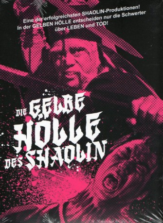
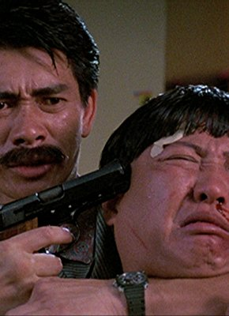

#7237 Die Gelbe Hölle des Shaolin
Alternativ: Fury of the Shaolin Master (Englischer Titel)
 
 IMDB-Wertung: 6.4 / 10
IMDB-Wertung: 6.4 / 10  Metascore: 0
Metascore: 0 
Jahr: 1978
Dauer: 92 Minuten
FSK: 18
Land: Taiwan Studio: E.A.T. MedienTonspuren: DD2.0 - ,
Untertitel:
Auflösung: 1080p (1920x816) Größe: 6717 MB
Genre: Action, Drama
Regisseur: Fu-Ti Lin
Drehbuch: Lung Ku
Soundtrack:
Darsteller:
- Yin-Tze Pan als Chiu Hsia
-  Phillip Ko als
 Ka-Yan Leung als
Ka-Yan Leung als - Hua Yueh als Nankung Hsiao
- Sing Chen als (Guest star
- Chiang-Lung Wen als Hsiao Shun
- Bao-Lien Yin als
- Chung-Kuei Chang als
- Hung Chi Chang als
- Shan Chang als
- Chen-Lei Chen als
- Chin Hai Chen als
- Lei Chen als
- Ching Feng Chiang als
- Shih Chin als
- Hsing Nan Ho als
- Wei-Hsiung Ho als
- Chin Hu als (Guest star
- Han Chang Hu als
- Te-Nan Lai als
- Ping Lu als
- Li-Pao Ou als
- Lo-Hui Shaw als
- Shu Tao als Hsin Ma
- Chung-Han Tsai als Hsiao Dou Tzu, Child
- Tai-Liang Wang als
- Wen-Huai Wang als
- Yao Wang als
- Hsiao Fu Weng als
- Fan Wu als
- Kuo-Liang Wu als
- Yang Yueh als (Guest star
Datei: X:\FSK18-Eastern\Gelbe Hölle des Shaolin, Die (1978, FSK18, 1920x816).mkv seit 09.10.2017
Festplatte: FSK18
 Es gibt insgesamt 102 Filme in der Gruppe 'FSK18-Eastern'
Es gibt insgesamt 102 Filme in der Gruppe 'FSK18-Eastern'